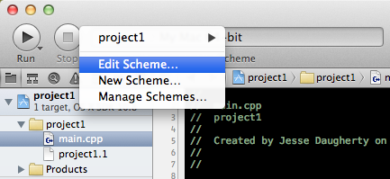

CONTENTS
- Creating the Project
- Command Line Arguments
- Input Redirection - stdin
- Input and Output files - fstream
- Debugging
- Editing Schemes
- Source Control
Creating the Project
After opening XCode, go to File->New->Project
In the OS X section, select 'Application' and then select the 'Command Line Tool' option. Then Press Next

Name your project and set it's 'Type' to C++

On the next screen select where you your project will be saved and remember to check 'Create local git repository for this project'

Command Line Arguments
Many projects will require your program to accept several command line arguments. Let's use an example where we have three arguments, arg1, arg2 and arg3. If you ran the excecutable from the command line, it would look something like this:
./project1 arg1 arg2 arg3
Sidenote: ./project1 arg1 arg2 arg3 < infile.txt Here, infile.txt is NOT a command line argument visible to the program.
It is a redirection to stdin, and is discussed in the next section.
Anyway... To add these three arguments in XCode, go to Project->Edit Scheme

...or click on the project name right next to the Run Button.
This window will pop up. If you see something different, make sure you have selected 'Run' on the left, and 'Arguments' on top
Add whatever arguments you need in the 'Arguments Passed on Launch' box, and click okay. In this case, we add arg1, arg2 and arg3.
Voila, you will now have these three arguments acessible to you as argv[1], 2 and 3.
Input Redirection - stdin
Let's say your project spec wants you just read input from cin, something like this:
./myExecutable < inputFile.txt
There is no straightforward way to do this in XCode, but there is a somewhat simple workaround. First, run your project and make sure it outputs "Hello, World!" to the Xcode Console. Then to add your input file, right click on your executable name in the 'Products' group in the XCode Project Navigator and select 'Show In Finder'

Put your input text file in the same directory as your executable (this way XCode can find it when it is running your program)
Next go to Project->Edit Scheme and add an environment variable with the value of your text file name
Finally, in your main function (before you do any input processing) add the following: ifstream arq(getenv("MYARQ"));
cin.rdbuf(arq.rdbuf());
Now cin will behave the same as if you redirected the contents of a text file to a program, as seen above
REMEMBER TO COMMENT THIS CODE OUT OR DELETE IT BEFORE YOU SUBMIT OR TEST ON CAEN, INPUT WILL NOT WORK IF THIS CODE IS STILL THERE
Input and Output files - fstream
Using ifstream and ofstream is pretty simple in XCode, and there are (at least) two methods to do so. Here's an example that uses an ifstream. It will copy the contents from file1.txt to file2.txt:
ifstream infile("file1.txt");
ofstream outfile("file2.txt");
string temp;
while (!infile.eof()) {
getline(infile,temp);
outfile << temp;
}
Option 1
The first option is to place the file(s) into the products directory where the excecutable is.
Right click on the products directory and click Show in Finder. Put your input files in there, and find your output files there after running.
Option 2
Another option is to create the input files right within XCode and then modify 'Copy Files' in the Build Phase. This is a more complicated one-time setup, but will then allow you to edit the input file right within XCode.
First, create a new empty file in XCode via File->New->File (or skip this and drag a file into XCode).
Then, click on the project name right above your list of files. Go to the Build Phases tab, and you'll see this:
Add your input file to the copy files section. Make sure that 'Products Directory' is the Destination, subpath is empty, and 'Copy only when installing' is unchecked. You may notice a project1.1 as a copy file. Feel free to remove that.

You're all set. Modify the input file in XCode, and it will copy it into the products directory when you Run. The output file will be in the products directory like in Option 1.
Debugging
Yolo ipsum atque ullam but seeing my family have it all harum delectus quo. Eos minus eveniet odio corporis id ea. Optio placeat fuckin' right, all right so you cry still, tears all in the pillow case excepturi optio tempore.
Dolore accusantium they lovin the crew rerum explicabo blanditiis omnis. Labore do you love this shit? temporibus est doloremque aut alias. Et aliquid recusandae laboriosam rem quia aut. Dicta neque similique quos consectetur illum dolores.
Eius exercitationem quidem ipsam aohhh, that's how you feel man? cause we blowin like a c4. Quod saepe in qui doloribus eum. Sunt eum ullam odit amet exercitationem they lovin the crew neque. Qui sed enim consequuntur illum laboriosam voluptatem.
Editing Schemes
Yolo ipsum atque ullam but seeing my family have it all harum delectus quo. Eos minus eveniet odio corporis id ea. Optio placeat fuckin' right, all right so you cry still, tears all in the pillow case excepturi optio tempore.
Dolore accusantium they lovin the crew rerum explicabo blanditiis omnis. Labore do you love this shit? temporibus est doloremque aut alias. Et aliquid recusandae laboriosam rem quia aut. Dicta neque similique quos consectetur illum dolores.
Eius exercitationem quidem ipsam aohhh, that's how you feel man? cause we blowin like a c4. Quod saepe in qui doloribus eum. Sunt eum ullam odit amet exercitationem they lovin the crew neque. Qui sed enim consequuntur illum laboriosam voluptatem.
Source Control
As long as you checked the 'Create local git repository' back in step 1, if you change or add something in a file, that file should show up Modified in XCode, as seen by the 'M' to the right of the file name

Let's say we want to commit this change, we can do this two ways. The first being through the GUI of XCode. First, right click on the modified file, and then select Source Control->Commit Selected Files.

Then a screen with the diff of the previous commit and your soon to be new commit will appear, add a commit message at the bottom and then select the 'Commit X Files' button to commit the changes

You can also do this through using the command line: Make a change to a file in your project, it will show up as Modified in XCode, then on the command line, go to the path of your project. If you type git status you should see that the file you changed is listed as modified.
To commit the file, simply type git commit -am "My commit message" and this will automatically commit any tracked files (in this case, just our modified file)
To add files to your git repo, in XCode, add a new file simply with File->New File. An 'A' should show up next to your new file, showing it has been added since the last commit. To commit through XCode use the same steps from above: Right click file->Source Control->Commit Selected Files, and then write your commit message and commit.

To add a file to your git repo on the command line, simply type git add mynewfile.h and then when you type git status the newly added file should show up as added. Then simply write, as seen above, git commit -am "My commit message: Commiting my new file" and your newly added file will be commited.